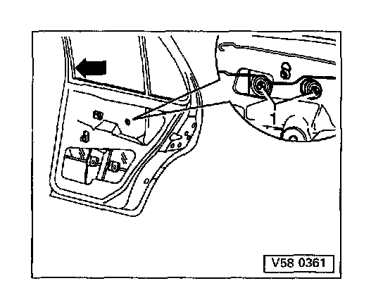

Door Window
Door window, adjusting
Remove door trim page Service and Repair
Partially remove vapor barrier Service and Repair
Crank door window upward or downward until clamping jaws are accessible through installation openings.
Loosen clamping jaws, push door window into window channel (arrow) and tighten clamping jaws with hex-nuts 1.
Tightening torque: 10 Nm (7 ft lb)